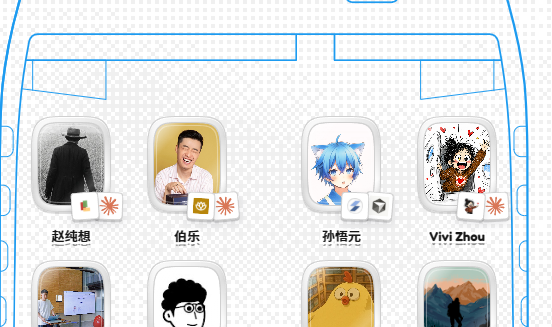

孙悟元
@wuyuandev
@chunxiangai 带着刷榜的嫌疑（没有拉！）挤到了前排！

赵纯想
@chunxiangai
好，那么现在，起飞！介绍：https://t.co/7RCn3i92m3
来自去年的一个愿望，和所有VibeCoding开发者一起，坐在一个云端的 Vibe 氛围浓郁的机舱里，自由飞翔。
一、登机牌：在这里发布和推进你的产品，产品挂件和你一起进入机舱！不再有 Producthunt 那样的功利。 https://t.co/89Hri27UYw